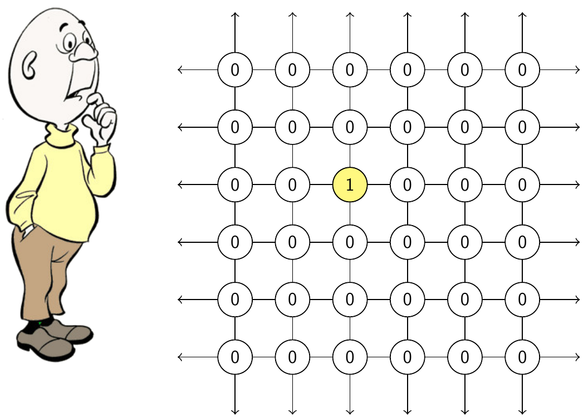

Events where you might find me
- Future events
- Workshop on group dynamics. Montevideo, Uruguay, October 2026.
- Chilean–Polish Mathematical Meeting. Wroclaw, Poland, September 2026.
- Workshop on group dynamics. Montevideo, Uruguay, October 2026.
- Past events
- Dyadisc 9: Expensive Dynamics - The dynamic youth speaks out. Saint-Valery-sur-Somme, France, June 2026.
- Groups and Dynamics: Topology, Measure, and Borel Structure. Oberwolfach, Germany, April 2026.
- Dynamics in patagonia. Puerto Natales, Chile, December 2025.
- Encuentro de Geometría Compleja y Dinámica Holomorfa-Aritmética. Temuco, Chile, November 2025.
- Dyadisc 8. University of Picardie Jules Verne (UPJV), Amiens, France, July 2025.
- Groups of dynamical origin. American Institute of Mathematics, Pasadena, California, June 2024.
- Dynamics on zero-dimensional spaces: new connections. Lorentz Center, May 2024.
- Dyadisc 9: Expensive Dynamics - The dynamic youth speaks out. Saint-Valery-sur-Somme, France, June 2026.
- Discrete Mathematics and Computer Science: Groups, Dynamics, Complexity, Words. CIRM, February 2024.
- Low Complexity Dynamical Systems. Brin Mathematics Research Center, October 2023.
- Group Actions on Cantor Sets. Casa matemática Oaxaca, Sepember 2023.
- Group Actions: Dynamics, Measure, Topology. University of Münster, Germany, November 2022
- School: “Combinatorial and Geometric Approaches on Dynamics”. CMM, Chile, November 2022
- Dyadisc 5: S-adicity. Université de Liège, Belgium, June 2022
- École de Jeunes Chercheurs en Informatique Mathématique. Virtual, April 2020.
- Fractals and Dynamics. Bar-Ilan University, Israel, January 2020.
- Measurable, Borel, and Topological Dynamics. CIRM, France, October 2019.
- Symbolic Dynamical Systems. Casa Matemática Oaxaca, México, May 2019.
- Thirteenth International Conference on Computability, Complexity and Randomness. Universidad Andrés Bello, Santiago, Chile, December 2018.
- Algorithmic questions in Dynamical systems. Université Paul Sabatier, Toulouse, France, March 2018.
- Escuela de invierno en grupos y dinámica en México. UNAM, Ciudad de México, México, January 2018.
- Current Trends in Dynamical Systems and the Mathematical Legacy of Rufus Bowen. University of British Columbia, Vancouver, Canada, August 2017.
- 6th Pingree Park Dynamics Workshop: Foundations and Frontiers in Symbolic Dynamics. Pingree park, Colorado, USA, July 2017.
- Wandering seminar. Wroclaw, Poland, March 2017.
- Dynamique symbolique, Combinatoire des mots. Calculabilité. Automates. CIRM, Marseille, France, January 2017.
- School on information and randomness. Santiago, Chile, December 2016.
- Combinatorics, Automata and Number Theory. CIRM, Marseille, France, November 2016.
- Transversal aspects of tilings. Oléron, France, June 2016.
- Workshop on Symbolic Dynamics over Finitely Presented Groups. Santiago, Chile, December 2014.
- Dyadisc 9: Expensive Dynamics - The dynamic youth speaks out. Saint-Valery-sur-Somme, France, June 2026.
- Seminars
- Séminaire CombAlgo Seminar of my research group in Bordeaux
- UBC math seminars A list of events in the math department in UBC.
- Séminaire MC2 A seminar I organized from 2016-2017.
- Séminaire CombAlgo Seminar of my research group in Bordeaux
Links
- ProgcompCL Una página dedicada a la programación competitiva en Chile.
- MATh.en.JEANS A french organization which aims to bring the joys of math to schools.
- Project Euler A repository with hundreds of math/CS problems
- Golly A cellular automata simulator.
- FSM An online tool to draw finite automata and graphs.
- JFLAP A simulator of finite automata, grammars and Turing machines.
- Sage A free alternative to maple/mathematica.

friend key: 766412_FJHCB0aQSNlb36NDq86FcmayO5Lc7TzT
Bonus
- Galería Algunas pinturas de principiante que he realizado.
- Video Un vídeo de presentación para la final de la ACM-ICPC en San Petersburgo. Con la actuación de Jorge Perez, Nicolás Sanhueza And Christian Von Borries.
